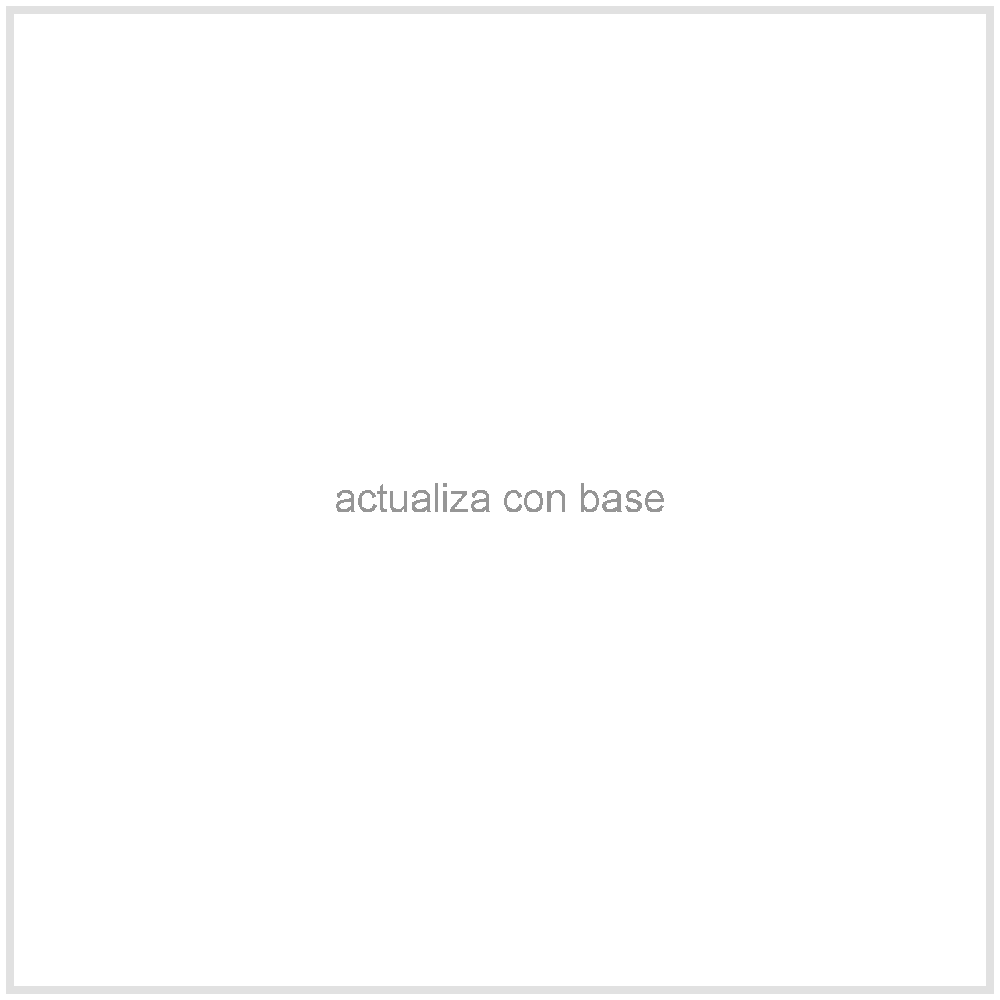
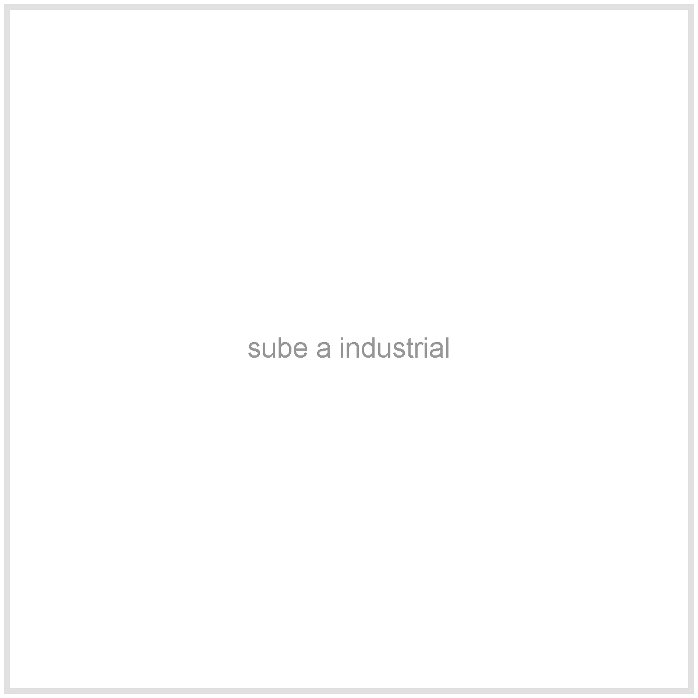

Reduce trabajo manual
Peladoras para crecer sin perder tiempo
Puedes iniciar con tambor para taladro, mejorar ergonomia con una base
soporte y avanzar a una peladora industrial cuando tu produccion pida
mas capacidad.
Pago contraentrega
Garantia de 1 año
Aplica retoma
Elegir mi peladora
Elige y pide por WhatsApp
Compra segun tu etapa y tu capacidad
Selecciona la version, revisa el total estimado y envia el pedido. Los precios de industrial no incluyen envio.
Tu seleccion
Peladora industrial 3 pollos/min
Incluye Equipo industrial personalizable
Cantidad 1 equipo
Total estimado $3 millones
Retoma Aplica
Los precios de industrial no incluyen envio. El asesor confirma ciudad, capacidad y personalizacion.
Hacer pedido por WhatsApp
Comparacion por version
Elige viendo la diferencia clave
Compara tu seleccion con la opcion anterior o siguiente para decidir si necesitas menos pelado manual, mejor ergonomia o mayor capacidad.
Por que comprarla
Menos horas de trabajo, mas capacidad para vender


Productividad
Dejas de perder tiempo
Reducir pelado manual libera horas de trabajo y ayuda a sostener mejor los pedidos.
Ruta gradual
No compras todo de una vez
Empiezas con tambor, mejoras con base y avanzas a industrial si tu volumen lo pide.
Calidad
Pocas unidades por mes
La fabricacion se controla por lotes pequeños para cuidar calidad y personalizacion.
3/min
Mas vendida
La version de 3 pollos por minuto equilibra inversion, capacidad y crecimiento.
1 año
Garantia
Cubre motor, estructura y tambor por defectos. Los dedos son consumibles.
Cliente verificado “La peladora me ayuda a reducir trabajo manual y responder mejor a los pedidos.”
Compra gradual “Empece con una opcion sencilla y ahora estoy mirando una version de mayor capacidad.”
Asesoria por WhatsApp “Me explicaron cual capacidad tenia sentido para mi volumen.”
Preguntas antes de comprar
Resuelve las dudas normales antes de pedir
Tu siguiente paso en Allpa Crece
Si todavia no tienes el flujo completo, puedes combinar peladora con conos, aturdidor y escaldado controlado.
Encontrar mi etapa
Peladora industrial 3 pollos/min
$3 millones
-
1
+
Hacer pedido